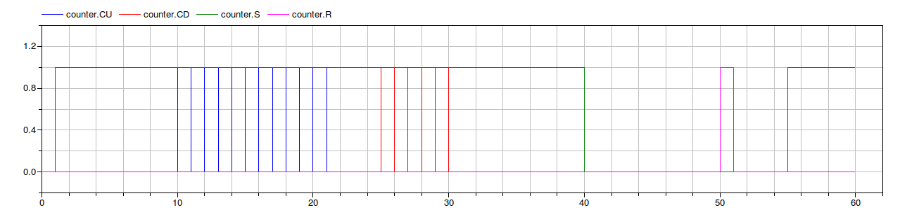

| Name | Description |
|---|---|
| test model of the counter | |
| test model of the counter |
 IndustrialControlSystems.Logical.Counter.Examples.countUPandDOWN
IndustrialControlSystems.Logical.Counter.Examples.countUPandDOWN
In this example have been tested the basic functionalities of the Up and DOWN counter.
At each time step Ts the inputs are read and the new output values Q and
CV are computed.
In the former image, are reported the S (Set), R (Reset), CU (CountUP),
CD (CountDown) signals.
The latter images contains the CV (Current Value) and the PV(Preset Value).


The counter update the CV when the Set signal rises, then for each rising edge of the Count Up (CU)
or Count Down (CD) signals the CV is incremented or decremented by 1.
The Set signal has to be high during this phase, otherwise the rising edges are not detected.
When the Reset (R) signal rises, the counter is reset to zero.
Constraints
The current value CV must be
0 <= CV <= MaxWhere Max is the module of the counter.
Extends from Modelica.Icons.Example (Icon for runnable examples).
IndustrialControlSystems.Logical.Counter.Examples.countZeroCrossing
y(t) = sin(t)

Extends from Modelica.Icons.Example (Icon for runnable examples).
Automatically generated Mon May 21 13:34:13 2012.